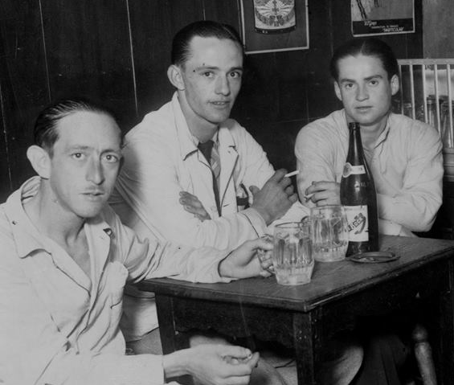

Todo empieza con un grupo de amigos que decidieron emplear trabajar tierras para vender sus cultivos, ahorrando una parte para el consumo de ellos y sus familias.
El pueblo le compraba mucho a estos amigos, ya que por su calidad, las hortalizas que se vendian se agotaban muy rápido.
Eventualmente, pueblos vecinos se enteraron de la calidad de los cultivos, y empezo a venir taanta gente, que los amigos tuvieron que contratar gente.
Y el resto...
Es historia
